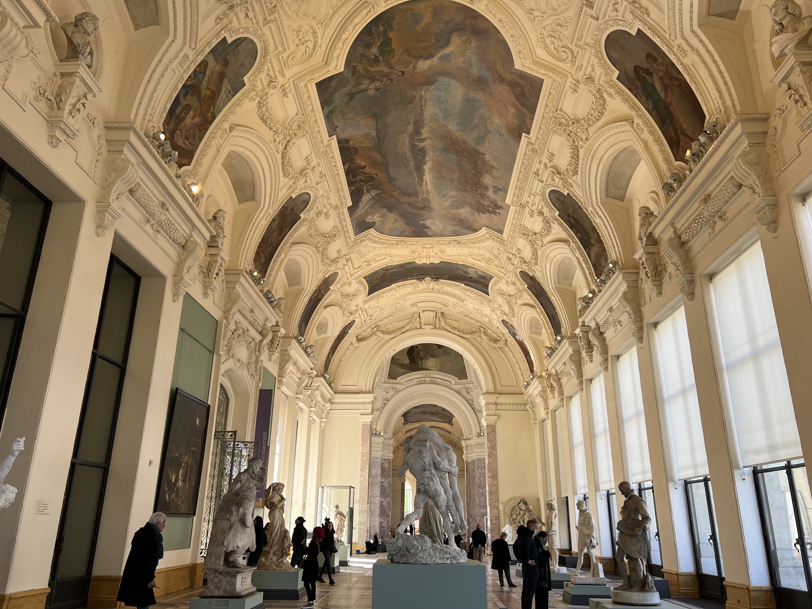
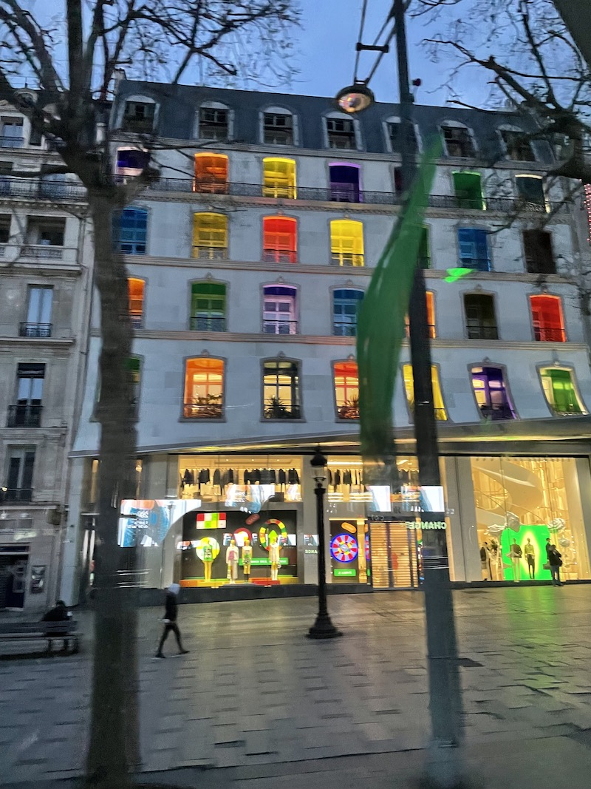
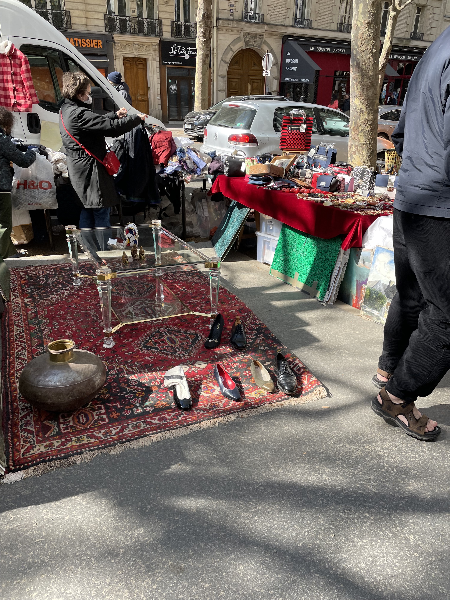

This was the first day of our Rick Steves tour. The tour would meet up in mid-afternoon, so we decided to use the morning to do a little sightseeing. Originally, we had planned to take the train to the flea market, but found it was potentially too far, so we decided to stay in the city instead.
We crossed the river and headed toward the Arc de Triomphe. The outside of it is decorated with the names of cities where the French Army had won victories over the centuries. Here we learned about the axe historique, an amazing urban plan that aligned the Grande Arche in La Défense, the Arc de Triomphe and the front of the Louvre along a single miles-long line. Standing by the Arc de Triomphe, you could look in either direction and clearly see those two other landmarks!
 Walking a little further, we ended up at the Grand Palais and Petit Palais, two ornate buildings that were constructed for an expo around the turn of the twentieth century. Fortunately, our French teacher back home had recommended the Petit Palais, which was a beautiful museum with sculptures and paintings inside. It surrounds a central courtyard with a gorgeous garden. It was one of our favorite museums in Paris.
We walked the length of the Champs Elysées, then entered a Paris Metro station for the first time. We had a rough idea how to get to our destination, the Jardin des Plantes, from the maps app on our phone, but we still had a little trouble. We asked the station agent, who was very patient and helpful - he even printed out the list of stops we'd be taking. We thanked him and headed out.

We got out at our stop, and coincidentally walked right into a Sunday flea market! Most of the vendors spoke only French - this was the first time on our trip that we couldn't count on being able to speak English at all, but it was fine! We did our first haggling in a foreign language, and negotiated to buy a five-euro postcard for a (still pretty steep!) two euros. We were just excited to communicate!
On our way to the garden, we were getting hungry, so we took the Rick Steves approach and decided to have a picnic for lunch. We went into a café and bought two ham and butter sandwiches, a Paris-Brest pastry and some drinks. We took them to-go and got back on our route to the garden, where we enjoyed our picnic and the goregous setting. Jardin des Plantes (literally, Plants Garden!) used to be the king's medicinal garden hundreds of years ago, and is now a giant botanical garden and public zoo.
It was getting to be time for the tour, so we headed back to the hotel. There, we met our tour guide, Marie, and the other guests in the lobby. We got set up with our weekly metro passes (these were so much easier than buying individual tickets!) and Marie gave us an overview of what we were going to do on the tour, and what we'd be doing the rest of the evening.
Then we headed out for a quick tour of the neighborhood. Marie pointed out bakeries, a grocery store, the metro stops, how to get to the Eiffel Tower, Rue Cler, and a couple of good restaurant options for our free nights. Then she took us all to a group dinner at the restaurant La Terrasse. We had a private room on the second floor and a great view of the École Miltaire, France's officer's training school. We also had a fun moment here, when we learned that one of the tour group members is a customer of the software company we started. It was fun to have a personal connection like that!

After dinner, we met our bus driver, Vincent, who took us on an evening bus tour of Paris. We saw so many sights for the very first time: Notre Dame on the Île de la Cité (literally, "City Island"), the military memorial Les Invalides, the Arc de Triomphe at night, and the Louvre exterior at night.
Vincent brought us back to the hotel for the night. We couldn't believe all the things we'd done in only a day and a half in Paris. We headed to bed and got ready for our next day: a tour of Île de la Cité and Ile Saint Louis.
{% include next_button.html text="On y va! (\"Let's go!\")" url="day2.html" %}